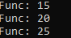

Делегаты Func
Синтаксис:
public delegate TR Func<TR>();
public delegate TR Func<T0, TR>(T0 a0);
public delegate TR Func<T0, T1, TR>(T0 a0, T1 a1);
public delegate TR Func<T0, T1, T2, TR>(T0 a0, T1 a1, T2 a2);
public delegate TR Func<T0, T1, T2, T3, TR>(T0 a0, T1 a1, T2 a2, T3 a3);
Пример (используется лямбда-выражение):
int[] numbers = {1,5,10,15,20,25};
Func<int, bool> MoreTen = n => n > 10;
IEnumerable<int> values = numbers.Where(MoreTen);
foreach(int value in values)
{
Console.WriteLine("Func: " + value);
}
Пример (используется делегат):
int[] numbers = {1,5,10,15,20,25};
Func<int, bool> MoreTen = delegate(int n) {
return n > 10;
};
IEnumerable<int> values = numbers.Where(MoreTen);
foreach(int value in values)
{
Console.WriteLine("Func: " + value);
}
В результате:

Created with the Personal Edition of HelpNDoc: Create iPhone web-based documentation